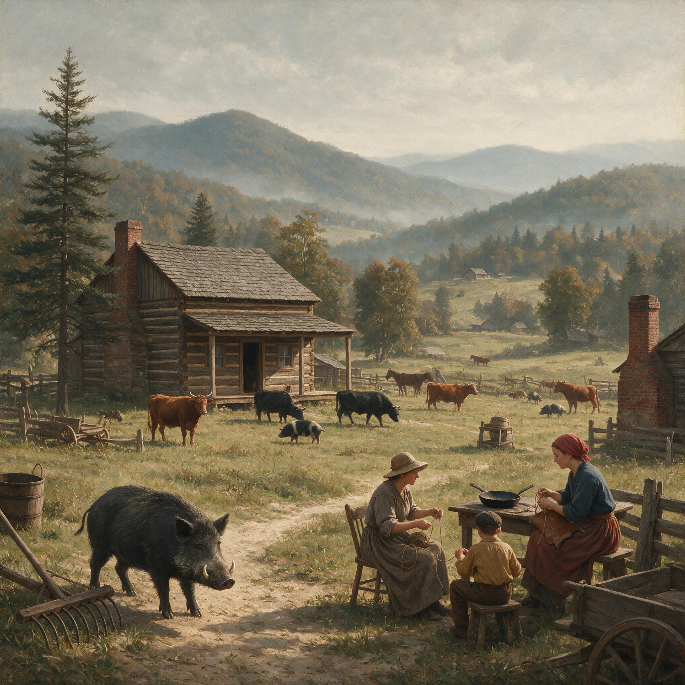

第 3 章
自由放牧的边界
农业普查员把那本厚厚的登记册摊在桌上时，外面的猪正在林子里。他问的是围栏英亩数，得到的回答是零。他又问养猪多少，回答是四十头。普查员没有抬头，把这组数字填进对应的栏位里。

那是1860年夏天的事情，地点在阿巴拉契亚山麓的某个县，具体哪一间木屋已经无从查考。登记册保存至今，纸页发黄，墨水褪成淡褐色，但那一行数字仍然清晰：左栏“猪”，四十；右栏“围栏英亩”，零。普查员没有写错，也没有追问。
他知道这个数字意味着什么。在南方山地和低地边缘，围栏为零不是疏漏，不是贫穷的表征，而是一套制度的准确记账：猪并不生活在被丈量的英亩上，它们生活在未经丈量的林地、河底和橡树坡里。
这份普查册翻过去之后一百多年，历史学者把那行记录称为自由放牧经济的剪影。当时的人并不这么称呼。他们只说“猪在林子里”或“猪上坡了”。对山麓的农家来说，猪圈几乎是一种陌生的东西。围栏是给庄稼用的——玉米地要用劈开的栗木条围起来，菜园要用横木挡住鹿和兔子——但不是给猪用的。
家猪是人类驯化野猪而成的亚种，其历史可追溯至数千年前，但直到16世纪才被欧洲殖民者带入美洲。它们的生物学特性——适应力强、繁殖快、几乎什么都吃——为自由放牧提供了基础，但真正将它们推入林地的，是土地制度本身。
猪从春到秋的活动半径可能覆盖几个人的地界，那些人彼此之间可能一年只打一次照面，或者根本不打。猪只认识一种边界：食物在哪里，边界就在哪里。
普查员合上登记册，道了声谢，骑上骡子往下一户人家去了。他没有看见的是，在他身后那片山麓林地里，四十头猪正分散在至少两百英亩的坡地上，用鼻子翻着腐殖层，找橡实、山毛榉坚果和野薯。它们不属于任何一个被围起来的空间。它们属于一个由食物分布、季节和习惯共同构成的移动地图。而这个地图，在官方的土地登记册上找不到对应的色块。
那个“养猪四十头、围栏零”的农家，具体地点已不可考。普查册只留下了姓名缩写和数字，没有门牌，也没有道路名称。
现代读者可以合理地推断，他的日子围绕两个节点展开，一个在春天，一个在深秋。春天意味着放猪。他把已经过冬的母猪和上一窝小猪从狭小的过冬猪栏里放出去。打开栏门那一瞬，猪会犹豫，接着鱼贯而出，钻进树线。秋天则要复杂得多：赶猪、点猪、屠宰、腌肉。
中间那几个月，人几乎只做一件事，就是在需要的时候确认猪还在。但这个“在”，本身就是最大的模糊。
放出去的猪并不立刻变成野猪。它们认得主人的声音和脚步声，认得每天回家路上的一处水槽，认得冬天那几个月喂食的位置。但它们同时学会野猪的生存技能。山麓的林地里有足够多的橡实、山毛榉坚果、栗子、野薯和根茎。秋天的地里还有收获后遗落的玉米和甘薯。猪用鼻子把腐殖层翻起来，吃土里的块茎和昆虫。它们的肩部肌肉在连续拱地的过程中变得比圈养猪结实，毛发在夏季脱落，入秋后换上更粗的硬毛。
它们仍属于主人，但身体已经被森林改写。这种改写是缓慢的，一个季节接一个季节地发生。一头春天放出去的母猪，到秋天回来时可能已经带着一窝在灌木丛里产下的小猪。这些小猪从未见过猪栏，从未吃过煮熟的泔水，从未在人类的屋檐下过夜。它们认得的世界只有树冠、泥坑和母体。
当农民把它们连同母猪一起赶回栏里时，它们会尖叫、冲撞栏板，头几天拒绝进食。农民不觉得这有什么奇怪。
他知道明年春天这些小猪会再次被放出去，其中一些会回来，另一些不会。
从生物学的角度看，自由放牧并不要求猪变成野猪。它只需要猪有足够的野外生存能力，能够自己找食，能够躲避狐狸和郊狼，能够在秋天被主人找到。因此，南方山地的农民无意中执行了一个长期的选择实验：每一代猪里，那些找不到食物、不会躲开捕食者、不会在林子深处活到秋天的个体，首先被淘汰。而最适应林地的个体不仅活下来，还会在秋天被选作留下后代的种猪。等到这个人一个季节一个季节地重复这种选择，“家猪”这个词就开始松动。
基因不关心词义。它只记录增大的肺活量、变窄的胸部、更敏感的嗅觉、更强的产仔后带仔移动的能力。
普查册只写数字。数字背后那个过程一次也没有出现在官方文件中。没有人觉得这值得记录，因为每一家都这样做。
到了1870年代，山麓各县的法院开始出现一类新的诉讼。这类诉讼的核心不是土地抵押，不是遗产分割，不是人身伤害，而是一头猪的归属。
北卡罗来纳西部或田纳西东部某个县法院收到了一起案件，卷宗里的一句判词被后来的摘录者保留下来：“于无人主张之林地捕获之牲畜，视为无主物，归捕获者所有。”
这句话的拉丁法源可以追溯到罗马法中的先占原则，经由英国普通法传入北美殖民地，再被各州法院吸纳为地方判例。但关键不在于它在法律史上的谱系，而在于它落到山麓林地的后果：它确认了一条现实逻辑，即如果一头猪在“无人主张”的林地里被捉住，法院不会费心去追查它的终极所有权。这片林地在官方档案里不属于任何人，或者属于那些从未出现在法庭上、从未宣称过所有权的人。于是，猪和地一起被作为无主物对待。
这句话的残酷性不在法律文本本身，而在它被引用的方式。法院并不主动去林子里寻找那四十头猪的主人。它只等待有人走进法庭，提出主张，缴纳诉讼费，然后才开始审视证据。
而大多数农民不会走进法庭。诉讼的费用、往返的路程、出庭耽搁的农活，以及邻居之间可能的长期不和，都构成猪的归属问题上的隐性成本。
一般农家更愿意用其他方式解决。要么秋天大家各自赶猪，在耳朵上的刻痕上做文章；要么默认“跟着母猪走”的小猪属于母猪主人；要么用玉米袋把一头猪从邻家地里引出来，私下相抵。
真正进入法院的，往往是两种人或两种情况：一种是捕获者与主张者分属不同的社交网络，无法通过邻里评议解决；另一种是猪的归属牵涉到一笔大钱，比如一头能生仔的年轻母猪，或一群已经开始独立觅食的半大猪，其价值超过起诉的成本。只有到了这一步，那句判词才会被引用。而它一旦被写进判决，就反过来改变了林子里的现实：从此，一只在产权模糊地带游荡的猪，在法庭眼里可能已经属于捕获者。
但是“无人主张”这个短语本身就是问题。这些林地并不是真的无人主张。普查册上有名字的人往往在那里有几百英亩的瘠薄地，只是不围栏、不丈量、不出租、不经营。税册上也有所反映，虽然估税官常常把林地价值标得极低——每英亩五十美分或更低——但名字和地块编号是存在的。
他们不主张，是因为主张的成本太高，也因为放猪的权利本身依赖大家都不主张。一旦某个人开始认真地划界、立栅、查问每一头过路的猪，他同时也会堵住自己的猪的去路。这是一个松散的默契。它不需要成文，不需要开会，不需要在县法院备案。它只需要每个人在看见邻居的猪穿过自己的林地时，转过头去做别的事。
这个默契有效维持了自由放牧制度。法院的那句判词，像一枚硬币的反面，把这个松散的默契翻译成严格的产权话语。正面是农家日常的放牧自由，反面是法院对无主物的任意分配。
两面同时存在，使“野猪”这个概念始终处在悬而未决的状态。放猪农民的账本可以提供另一组数字。一本保存下来的十九世纪七十年代农家账册，封面已经磨损，纸角卷边，墨水是自制的栎瘿墨水，颜色深浅不一。在记录玉米收成、盐价和布匹支出的页面边缘，有一行小字：“本年放养猪22头，归家18头，损失4头，折价约$20。”这行小字没有说明损失的原因。
是被人偷了，还是被野兽咬死了，还是自己走失再也没有回来，账本都不说。它只说四头猪损失，折价二十美元。
猎手今天读完这行字，可能很快算出四头猪二十美元，每头五美元。但“损失”这个词其实混淆了两个完全不同的去向：死亡与失踪。死亡是自然损失——被狼咬死、病死在灌木丛里、陷进泥沼出不来。失踪则可能包括被邻居扣留、被路人捕获、或者进入更深的林地、变得再也认不出来。
巡回牧师坐在礼拜堂里听教友议论时，分辨不出这些去向；账本也分辨不出。农民在纸页上只记下一个数字，一个他自己也无法拆解的总和。
这本账册所在县，同一时期的县法院记录中，“无主猪”或“走失猪”类诉讼年均为十二起，呈上升趋势。每年十二起这个数字单独看很小，放在全县人口和猪只总量中也是微不足道。但趋势才是重点。每年十二起诉讼中，有一起可能涉及十几头猪，有一起可能只是两方为了一头即将下崽的母猪打了一整年官司。另一些年份，数字会突然跳到二十六起，或者回落到三起。
书记官的笔迹潦草，有时连续几页都是抵押和土地纠纷，只在某个角落出现“猪”字。要把这些诉讼逐年加总，才能看见一条线。
这条线并不表示山麓农户变得更爱打官司，而表示一个更基本的压力：人口越稠密，地界越频繁地重叠，猪和人同时感到挤压。而挤压产生的归属纠纷，最后只能由法院来划定。
法院划定的结果，往往不取决于猪本身。猪身上到底有多少野性，在法庭上极少被讨论。判决更依赖以下问题：猪是在谁的地上被捉住的，捉猪的时间离走失多久，猪有没有耳标或刻痕，双方是否有过口头上的放牧约定。换句话说，法律从一开始就不处理猪的真实生态，只处理它能否归属某个人。
正是在这层意义上，那句“于无人主张之林地捕获之牲畜，视为无主物，归捕获者所有”才显得残酷。它把一头可能还带着主人耳缺的猪，推进了“无主物”的范畴。那头猪可能昨天还在主人家的猪栏外拱土，今天被邻居的陷阱困住，明天就被法院判给另一个从未见过它的人。猪是否野生、是否半野化，法律没有能力回答。
它只能回答谁来付诉讼费用。这时候可以引入第三份材料。一位巡回牧师的日记里，在十九世纪七十年代的某个秋天，写道：“今日见大猪领五仔穿行于史密斯与琼斯地界之矮林，其行踪难辨归属。”这句简短描写恰好落在边界上。牧师没说猪是野猪还是家猪。他说“难辨归属”，而不是“难以捕捉”或“难以驱赶”。一个宗教人士在赶路途中看到的，不是畜牧学意义上的动物，而是产权地图上的一次短暂扰动。
大猪和五头小猪穿过史密斯与琼斯两个地界的矮林。如果史密斯和琼斯同时看见这一幕，两人可能都不会上前追赶，也不会互相指责。因为追赶需要知道猪是谁的；而只要无法确定是谁的，追一个陌生人追赶的猪反而会把问题转移到追赶者身上。猪群穿过矮林的那一刻，属于谁的答案在史密斯和琼斯的沉默里继续悬着。
日记里的“地界”是有分量的。它说明土地已经分了家，不是无主地，也不是共享地。史密斯和琼斯是名字，不是“某甲某乙”的泛称。牧师能认得他们，说明这些地界在教区生活中的确存在。
地界清晰了，猪却依然自由穿行。原因很简单：这是一片没有围栏的地界，或者围栏只围了小块河谷地，山坡上的矮林并无篱障。只要没有实质阻隔，猪就可以按自己的路线穿过几片地产。
日记作者没有进一步记载后来发生的事。或许他走远了，猪也走远了。或许当天晚上其中一户把猪拦进了自己的猪栏，另一户则对牧师抱怨。但记录只到这一步。日记没有透露猪的最终归属。
留到今天，这句话成为自由放牧边界的一个小小标记：一头大猪和五头小猪穿行于两个地界之间的画面，本身就是一个无法被单一法庭判词穷尽的复杂事件。
这些材料彼此独立，在被不同的人写下或记下时，谁也没有想到它们将被放在一起阅读。普查员的数目背后，是农家对林地食物和猪的活动半径的理解。法院判词背后，是普通法对“无主物”的传统信念，它把管理权的碎片化正式化。账本页边的小字背后，是一个农民对不可归类的损失所做的日常记账，它只记数字，不记法律。
牧师日记背后，是一个过路者对产权模糊地带的目击，它只写“难辨归属”，没有写结论。
四者合起来，给出了比任何州议会报告都更精确的图景：自由放牧制度把家猪与野猪的界限，变成了一个经济上存在、法律上暧昧、生态上真实的空间。在这个空间中，野猪基因重新进入家猪种群，并非由一两次偶然的遗传事件造成，而是由一种年度节律反复促成。
每年春天，家猪被放入有野化猪群出没的林地；每年秋天，农民从林子里赶回部分猪。未被找回的不只可能是被杀死的或被偷走的个体，也可能是那些融入野化群体、甚至与野化公猪交配的个体。
次年春天，有些母猪带着混血后代回到农家附近。农民认得母猪的耳缺——那是去年春天他用刀在母猪右耳上切出的一个三角形缺口——却不认得那些带着细长吻部和深色毛皮的小猪。这些小猪有的被留下，有的被卖掉，有的再次消失。
基因流动就在这个循环里不断发生，不因法律或法庭而归属于哪一个物种。必须强调，这不是“原始野猪”与“纯种家猪”的对冲。
野化猪本身就是几个世纪前从家猪分离出去的后代。它们之间的杂交在生物学上极其容易，因此基因交换远非例外，而是常态。自由放牧制度给这个常态提供了极其充足的条件。到这里，有必要回应对野猪泛滥的一种常见解释。这种解释认为，野猪的扩散主要是一个生物学事件：一个物种拥有极高的繁殖力和杂食性，无论在美国南方还是别的温带地区，只要有机会就会失控。制度只是附带的加速器。
确实，繁殖力和食性不能低估。一头母猪一年可以产两窝，每窝四到八头小猪，幼仔成活率在食物充足时极高。野猪几乎什么都吃：橡实、根茎、昆虫、爬行动物的卵、腐肉、农作物。这些生物学特性使它们具备了在任何温带森林中建立种群的能力。
但十九世纪阿巴拉契亚山麓的记录表明，在猪群真正失控之前，是产权安排首先制造了一个家猪可以自由进入林地的长期通道。没有这个通道，家猪的野外生存能力和野化猪的基因流动将极其有限。
一个农民如果把猪关在栏内——像新英格兰地区日益普遍的圈养模式那样——猪群再高的繁殖力也会被圈养空间和饲料限制收敛，无法与外部的野化猪接触。自由放牧恰恰消解了这道边界：它不把猪像圈养牲畜一样锁在私人财产的核心区，而是把猪推入一个多个产权主体都不完全控制的地带。野猪问题看似是一个生物学问题，但它的形成依赖于这个地带。反过来说，如果生物繁殖力真的足以无视制度而必然爆发，那么早期的普查数字就不会集中在自由放牧州，而会均匀出现在实行围栏圈养的州。
然而材料呈现的分布并不均匀：1860年的普查显示，“围栏零”的高密度区域与后来野猪问题最早爆发的区域高度重合。把野猪泛滥完全归结为物种性质，等于忽略了制度在每一个年度循环中起的作用。当然，制度不是外在地“允许”某种基因流动，制度本身就是土地所有权模式的体现。美国南方自由放牧的范围，与土地所有制的分散和登记制度的粗糙有关，也与内战前形成的乡村习惯有关。农民拥有土地，但土地的边界不一定有实质围栏。
税册上写的英亩数，与地面上的实际使用面积差距很大。林地不是生产空间，而是附带的放牧空间。地主愿意让邻居的猪经过自己的林地，因为自己的猪也会经过邻居的林地。
这个互惠网络直到人口压力增大的十九世纪后期才渐渐破裂。当新的定居者到来——他们可能是内战后从北方南下的退伍军人，可能是从沿海低地迁入山地的棉花种植者——他们可能不承认老一辈的口头放牧安排，而要求用成文法和县法院来裁定归属。一旦裁定发生，法官面对的不只是猪，而是一种从未成文的土地习惯。法官只有工具：动产法、无主物原则、先占原则。
于是，他们只能把猪从土地制度中剥离开来，单独裁定。这就必然导致把同一头猪在不同法院里判给不同的人，或在相似案件中作出相互矛盾的判决。田纳西东部的一个县法院可能判定，耳朵上有刻痕的猪属于刻痕的主人，无论它在谁的地上被捉住；而相邻的北卡罗来纳西部某县法院可能判定，在无围栏林地上捕获的猪属于捕获者，无论它有没有刻痕。
两个判决各自在自己的辖区内有效，但猪的活动范围不承认县界。如果站在被普查的那个农民的位置上，十九世纪七十年代的某一天，他会在秋日傍晚点数归家的猪群。猪从林子里回来，三三两两，在泥坑边打转，或者直接去拱栏板。他站在猪栏外，数了一遍：十七头。又数一遍：还是十七头。缺了一头两岁的大猪。
他朝屋后那片产权不明的森林看。林子在暮色里安静，橡树和山核桃树的轮廓渐渐融进灰蓝色的天光里，像没有人进去过，也没有猪进去过。他不会去追索。他计算过——也许在心里算过不止一次——诉讼费用已经超过那头猪能卖的价格。县法院的诉讼费是一块五毛钱，加上往返两天的骡子和误工，加上如果败诉要付对方的费用，加上邻居从此见面不说话的代价。那头猪值五块钱。于是他在账本上加一笔，或者不加。
他应该也不会把这件事弄到法院，因为他知道那片林地有几个名字重叠——他自己的名字在税册上，但老史密斯家在三十年前也用过那片林子放猪，琼斯家的祖父据说在那里砍过木材——他知道县法院的判词会怎么处理。甚至他可能连看都不看林子，只是转身回屋。这就是一个数字背后的画面。它没有悲剧的喧哗，只有一种沉默。
但这不意味着制度已经稳定。恰恰相反，这种沉默正在积累一个更庞大问题的早期路径。每年十二起诉讼，多起来也到几十起。账本上每年放猪二十二头归家十八头。一次次未追索的走失，一次次“视为无主物”的判决，都在把“野猪”这个概念从家畜中一点点剥离出去，却又没有给它一个确定的公共身份。到了二十世纪，当各州开始制定野猪管理法规时，面对的正是这个悬而未决的中间地带。
一些州把自由放牧的猪视作家畜——因为它们有主人、有耳缺、秋天会被赶回来屠宰——另一些州把无人主张的野猪视为猎物，允许任何人猎杀而不承担赔偿责任，另一些州干脆禁止运输和出售活野猪，却仍允许自由放牧家猪继续进入林地。法规的矛盾并不来自立法者的愚蠢，而来自一个多世纪以前已经形成的现实：同一片林地里，猪可能同时是财产、害兽和野味。
从账本边那行小字到牧师日记里的穿行画面，再到县法院的“无主物”判词，自由放牧制度显出一种内在逻辑：它极其高效地利用林地饲料——一头猪在森林里可以靠橡实和根茎长到屠宰体重，几乎不消耗农场的玉米储备——又极其低效地确定责任。
它节省了围栏成本，却把成本转嫁到那些说不清的地点、无法指认的猪群和逐年增加的法警传票上。山麓农户在短暂的时间里收获了低成本猪肉。一个家庭一年屠宰四到六头猪，腌成咸肉，挂在熏房里，可以支撑整个冬天的蛋白质需求。这些猪肉的成本几乎只有盐和人工。
林地饲料是免费的，猪的劳动也是免费的——它们自己找食、自己育肥、自己照顾幼仔。从这个角度看，自由放牧是南方山地最理性的经济选择。
但同一批农户也在漫长的制度时间里支付了另一种代价。这个代价当时无人算出。因为对于一个站在秋日猪栏外点数的人来说，少一头猪只是二十美元以内的损失。而同一季节里，另一个县法院的书记官正好抄完一份“无主猪”判决，把它归档到那只松木文件柜里，和土地契约、遗嘱认证、刑事起诉书放在一起。再往远处，整个南方山地的林子里，还有更多的猪继续穿行于地界之间，带着混合的血缘，带着不被承认的野性。
那是一张已经画好的航路图。德索托时代散失的猪经过这片大陆的近海与河谷，在三个世纪后遇到了另一种制度：森林覆盖的山麓、未围栏的地产和一份农业普查表。猪不再只是被船只带来的家畜，它已经进入一个由地方习惯、法院先例、普查栏位和乡村沉默共同维持的共和国。那头秋天没有归家的猪，最终不会回到猪栏，也不会出现在任何一本账册里。
它会继续吃林子里的橡实，继续拱开腐殖层，继续在产权模糊的地段产下下一代。它的主人不再追索。县法院还是会在下一次遇到类似案件时，引用同一句判词：“于无人主张之林地捕获之牲畜，视为无主物，归捕获者所有。”而联邦尚未出现——联邦农业部的野猪防控计划要等到整整一个世纪之后才会成形——更不会有任何一个机构来为整个林地的猪负责。
十一月的黄昏，猪栏外少了一头两岁大猪，那个农民可能只是在心里把一个数目往下拨了一格。他转身回屋的时候，背后的林子里没有人，也没有猪。只有橡树叶子在风里翻动的声音，以及更远处，在史密斯与琼斯地界的矮林里，另一头大猪领着五头小猪穿过暮色，方向不明。同年该县法院记录中，“无主猪”诉讼为十二起。次年这个数字变成了十四起。